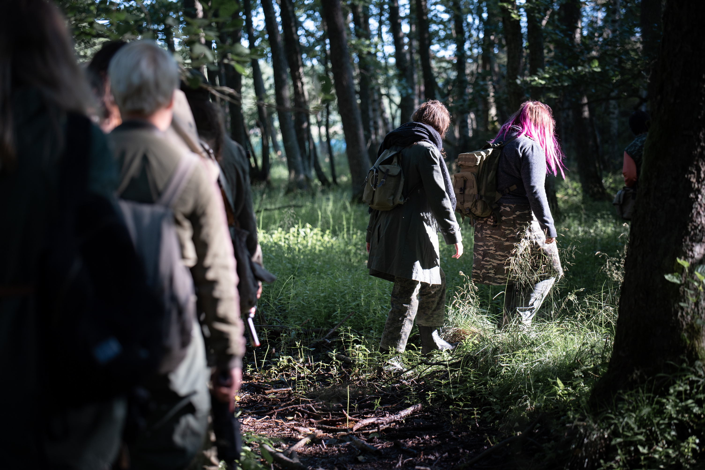

Do crime 3 pöydän kattaus, kuvannut Tuomas Puikkonen

Danakar 2 vaellus suojakilpigeneraattorille, kuvannut Santtu Pajukanta

Celeste Lionetti, yksinkertainen bilettäjä, kuvannut Tuomas Puikkonen

Minttu Koiniitty, kuvannut Tuomas Puikkonen